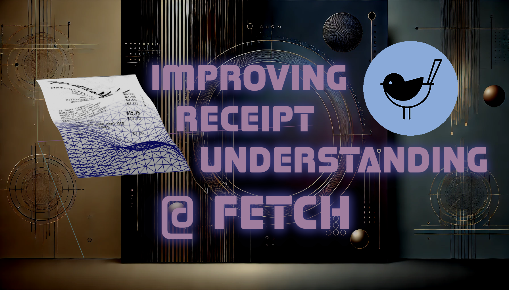

Note: this event is hosted at Fetch Rewards Headquarters in Downtown Madison. While the event is free and open to the public, attendees must RSVP for entrance.
Link for Required RSVP: https://lu.ma/uc9se65d
Fetch uses machine learning to process images of receipts into structured data at scale (over 10 million images per day!). This is a big part of how Fetch can reward consumers at a large scale while providing brands an effective way to promote their products. However, due to the varied quality of these images, extracting this structured data can be challenging. In particular, associating product names with prices, quantities, and other details can be difficult to achieve in some low-quality images. In this talk, Adam will show how the combination of a cutting-edge object-detection ML model along with Graph-theory techniques (all implemented in Python) has led to a measurable increase in accuracy for Fetch’s receipt understanding.
Adam Frees is the tech lead of the Machine Learning organization at Fetch. He holds a Bachelor's degree from Brown University and a Ph.D. in Physics from UW-Madison. Prior to Fetch, he worked as a software developer at Epic Systems, utilizing ML to process data from over 60 million patient records, and at Majesco, where he trained and deployed CV and NLP models for the Property & Casualty Insurance sector.